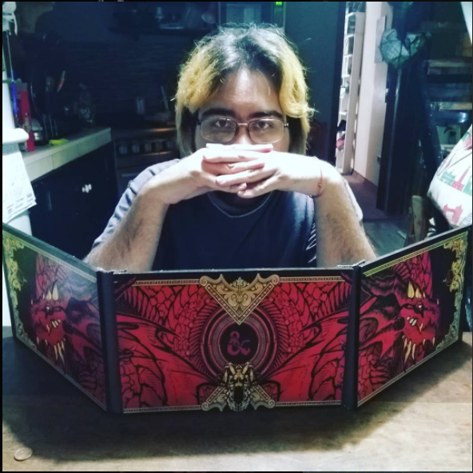
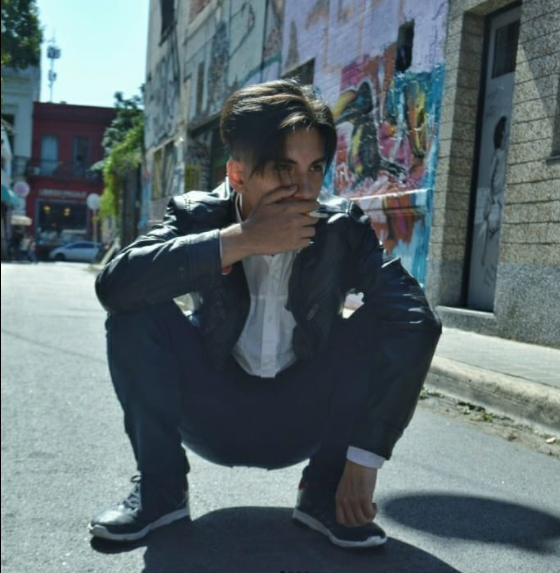

Somos un grupo de inadaptados sociales, conflictivos que se la pasan haciendo memes de la vida y explotando juegos hasta que su gracia termina.
¿Que es Post Mortem Crew?
Caos, somos y no somos el caos. Algunas personas nos nombran como "El lugar", el dominio es cuestion de tiempo. En este lugar vas a ser recibido, sea como seas, todos pasan por las mismas desgracias no hacemos distinciones, bienvenido al principio del fin. We are the tangananica and the tanganana.
MR SOULSTER
-
La cabeza del grupo, mandatario/dictador, la pareja de la jefa.
El es el hombre del traje, no solo tiene cara de loco si no, que esta loco, puede utilizar armas de fuego, armas de mano.
- *baterias y monster no incluidas*
Camila

-
La jefa, la pareja del dictador y la soporte del grupo.
Esta individua es la que mantiene cuerdo a Soulster, sin ella todos estarían destrozados por el loco, ademas de esto fue la mama de todos un tiempo.
- *mates y yerbas por separado*
VALTIEL

-
Un individuo que nadie sabe como se sustenta economicamente en la actualidad, es un artista prestigioso que no ve la calidad de su propio arte.
A diferencia de lo normal, les pedire que no lo miren pues le dara ansiedad, el es bajo e inteligente, demasiado para ser un humano.
No le pregunten donde estuvo en el 31 de mayo de 1986.
- *valtiel version "camara sin luz" ahora disponible a la venta en 30 paises distintos*
LUCHO
- Este personaje hiperactivo sabe cuando cambiar su forma de ser, actor y canta autor de canciones muy pegadizas, las escuchas una vez y no salis del bucle.
- *Incluye dinero, trabajo familiar, buen sentido de la musica y adaptabilidad*